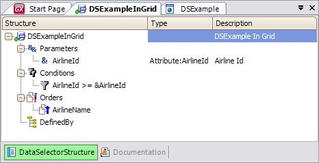
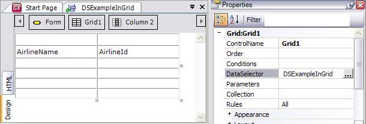
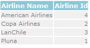

A Grid control or Free Style Grid control can have a Data Selector object associated through its "DataSelector = nameDataSelector" property (see Data Selector property). In the following image, look at the structure of the DSExampleInGrid Data Selector:

Note below that the grid contained in the Web Panel object has the previous Data Selector assigned in its Data Selector property:

The behavior is just like having a For Each with a USING clause. This means that the Data Selector doesn't have an associated navigation (it doesn't have a base table by itself). Therefore, at specification time, the Data Selector definition is combined with the Grid definition to determine the table that will be navigated, taking into account the attributes of both definitions:
- If the Grid and the Data Selector have Conditions, both are considered
- If the Grid and the Data Selector have Order clause(s), the resulting Order will be a combination of them. The Grid order has priority, so in the event that GeneXus discards a Data Selector Order, a warning spc0135 will be triggered at specification time
Thus, in the example shown, the grid will be loaded with all the Airline records that fulfill the grid conditions and the Data Selector conditions. The order with which the data will be retrieved will result from a combination of the specified orders in both definitions:

- If parameters need to be provided to the DS, list them in the Parameters property and separate them with commas.
- Data Selector does not work in a Transaction's Grid.
Data Selectors in Aggregations
Data Selectors in Data Providers
Data Selectors in For Each command
Data Selectors in Web Panels
Work With for Smart Devices List Node
Entry Panels as Filters for a List in Smart Devices
 Data Selectors Data Selectors
|